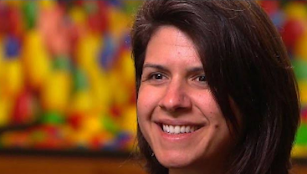

Parisa Tabriz é uma especialista em segurança de computadores iraniana-americana que trabalha para a empresa Google como vice-presidente de engenharia, gerenciando a equipe do navegador Chrome, para deixá-lo mais seguro e, de forma mais geral, melhorar a segurança da web.
Sendo expert em segurança, ela se dedica a manter a navegação segura. Seu título, "princesa da segurança", ela escolheu-o em seu cartão de visita, em vez do convencional "engenheiro de segurança da informação", pois soava menos chato e o considerava irônico.
Ela nasceu de mãe de descendência polonesa-americana, enfermeira, e de seu pai iraniano, médico. Ela cresceu nos subúrbios de Chicago e é a irmã mais velha de dois irmãos. Tabriz não teve contato com programação e ciência da computação até seu primeiro ano na universidade.
Seus estudos iniciaram na universidade na área de engenharia da computação, mas logo se interessou pela ciência da computação. Ela concluiu bacharelado e mestrado em ciências na universidade e fez pesquisas em segurança sem fio e ataques a tecnologias de aprimoramento da privacidade, sendo coautora de artigos com seu orientador Nikita Borisov. Ela era um membro ativo de um clube estudantil interessado em segurança de computadores.
Tabriz trabalhou na equipe de segurança do Google sendo estagiária de verão, ingressando na empresa meses depois após a sua formatura. Ela treinou a equipe do Google para aprender mais sobre segurança e trabalhou com jovens na DEFCON e escoteiras dos EUA para expor um conjunto mais diversificado de pessoas ao campo da segurança de computadores.
Em 2013, Tabriz assumiu a responsabilidade pela segurança do Google Chrome, tornando-se em 2020 a chefe de produto, engenharia e UX.
Quando ela não está envolvida com tarefas relacionadas a tecnologia, ela gosta de fazer arte, comida e diversos projetos DIY, além de fazer caminhadas e escaladas nas montanhas.